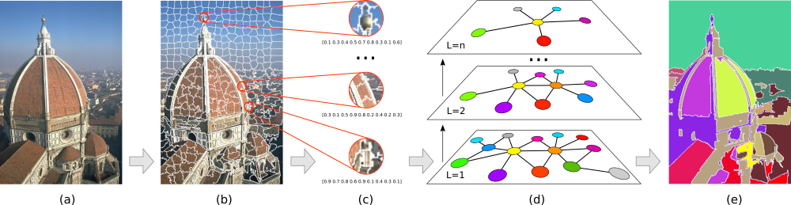

|
Multi-level Graph Label Propagation for Image Segmentation Below is a C/C++ implementation of the image segmentation algorithm described in the paper:

The proposed method: (a) Input image; (b) super-pixel pre-segmentation; (c) feature extraction; (d) multi-level propagation where new graphs are created by merging similar super-pixels from the previous level; (e) final segmentation at the last level.
Example of results:
You cat cite our paper use the bibtex reference below:
@inproceedings{mglp2020ivar,
author = {I. V. {Belizario} and J. B. {Neto}},
booktitle={2020 33th SIBGRAPI Conference on Graphics, Patterns and Images},
title = {Multi-level Graph Label Propagation for Image Segmentation},
year = {2020},
volume = {},
number = {},
pages = {},
}
|